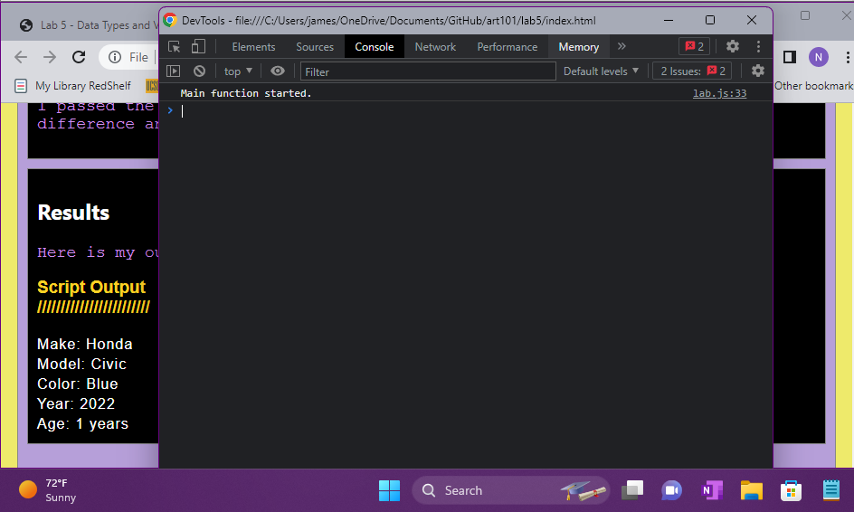

Lab 14 - Debugging Tools & Strategies
Challenge
Problems
Results
Debugging
Lab 5
"Failed to execute 'write' on 'Document': It isn't possible to write into a document from an asynchronously-loaded external script unless it is explicitly opened."
Solution: JavaScript file was linked in head and output sections. Removing it from the head fixed these warnings.
Lab 6
"Failed to execute 'write' on 'Document': It isn't possible to write into a document from an asynchronously-loaded external script unless it is explicitly opened."
Solution: JavaScript file was linked in head and output sections. Removing it from the head fixed these warnings.
Lab 10
Incorrect use of <label for=FORM_ELEMENT>
Solution: